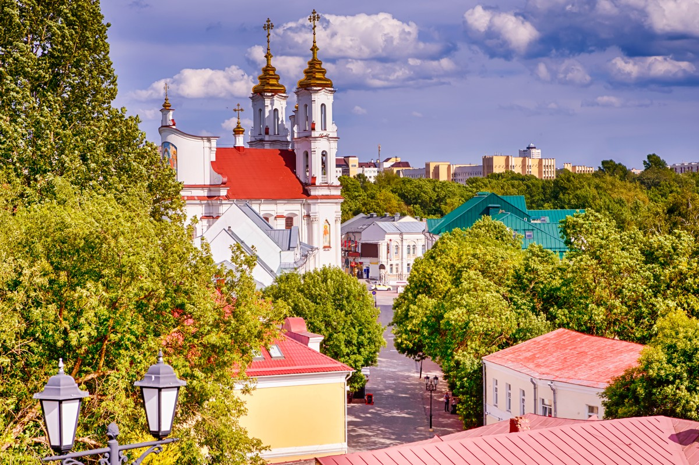
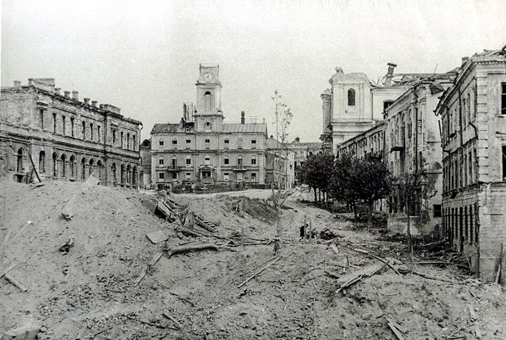
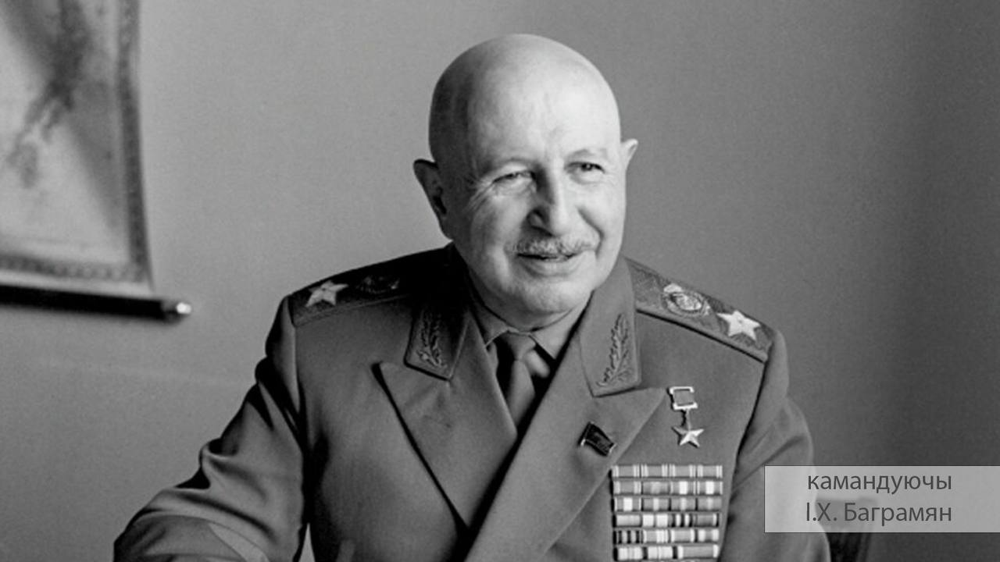
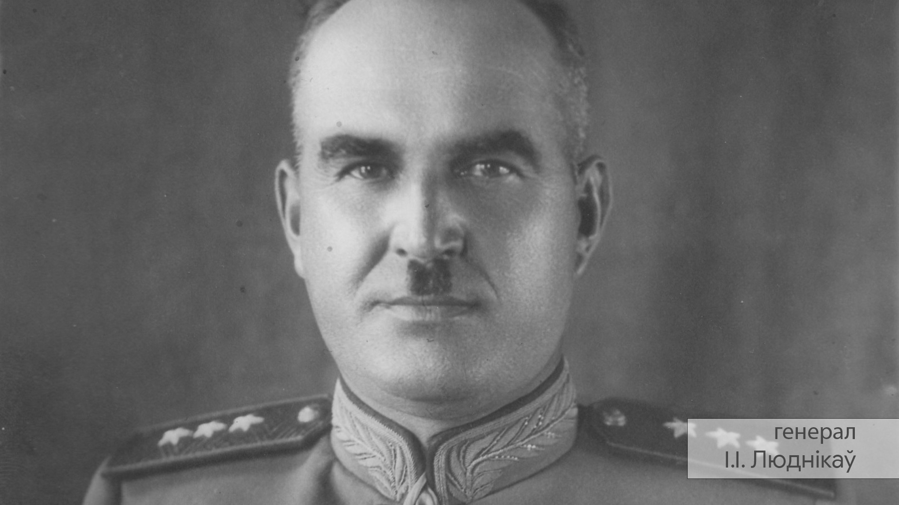
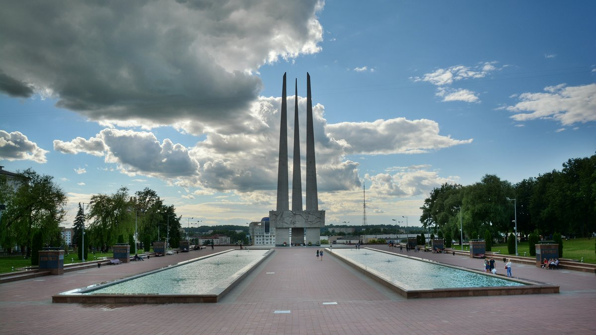
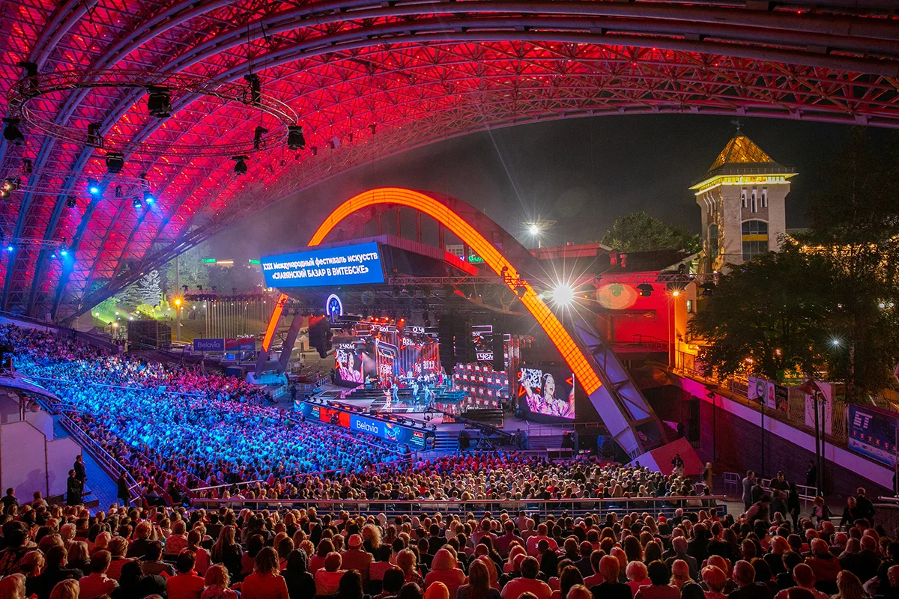

Віцебск сёння
Віцебск застаецца адным з самых значных гарадоў Беларусі. Тут заўсёды шануюць памяць аб падзеях Вялікай Айчыннай вайны. Кожны год у горадзе праходзяць мерапрыемствы, прысвечаныя Дню Перамогі: парады, выставы і сустрэчы ветэранаў.
Гісторыя гераічнага горада
Падчас вайны Віцебск быў акупаваны нямецкімі войскамі і зведаў вялікія разбурэнні. Горад амаль поўнасцю знішчылі, але дзякуючы намаганням беларускага народа ён быў адноўлены. Сёння Віцебск з'яўляецца не толькі культурнай сталіцай краіны, але і месцам, дзе асабліва шануюць памяць пра тую страшную эпоху.
Вызваленне Віцебска
22-23 чэрвеня 1944 года пачалося правядзенне савецкімі войскамі Беларускай аперацыі «Багратыён» — адной з найбуйнейшых вайсковых аперацый у гісторыі чалавецтва. Сярод яе першых этапаў была Віцебска-Аршанская наступальная аперацыя, падчас якой быў вызвалены Віцебск. У Віцебска-Аршанскай аперацыі прымалі ўдзел 1-ы Беларускі (генерал арміі I.Х. Баграмян) і 3-і Прыбалтыйскі (генерал-палкоўнік, з 26 чэрвеня генерал арміі I.Д. Чарняхоўскі) франты.
Савецкім войскам супрацьстаялі 3-я і 4-я танкавыя арміі групы армій "Цэнтр" (камандуючы генерал-фельдмаршал Э.Буш). Чырвоная армія мела колькасную перавагу на зямлі і ў паветры. Непасрэдна вызваленне горада было праведзена дывізіямі 43-й (А.П. Белабародаў) і 39-й (I. I. Люднікаў) савецкіх армій. 39-я армія атакавала немцаў з паўднёвага захаду ад горада, 43-я з паўночнага захаду. Атака 43-й арміі была абсалютнай нечаканасцю для нямецкага камандавання.
Як Віцебск памятае подзвіг герояў
У горадзе пабудаваны шматлікія мемарыялы, такія як «Тры штыкі», мемарыяльны комплекс у памяць аб загінулых у гады вайны. Кожны год моладзь і ветэраны збіраюцца, каб ушанаваць памяць герояў вайны i ахвяр фашызму.
Сучаснае жыццё Віцебска
Сёння Віцебск — гэта сучасны горад, які спалучае гістарычную спадчыну з новым развіццём. Тут праводзіцца славуты «Славянскі базар», аднаўляюцца старыя будынкі і адкрываюцца новыя культурныя цэнтры. Але галоўнае — у сэрцах віцяблян заўсёды будзе жыць памяць аб подзвігах іх продкаў.
